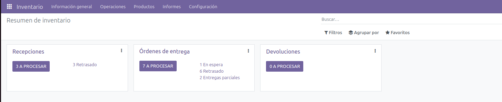
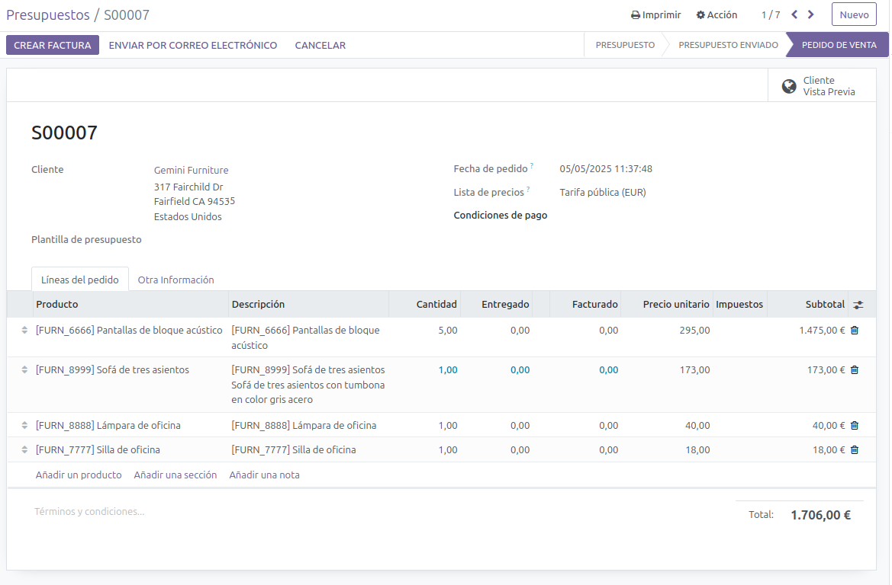

El módulo de Inventario permite controlar entradas, salidas y niveles de stock de forma organizada. Es esencial para empresas que gestionan productos físicos.
Ejemplo de vista del módulo:
Gestión de productos:
Es un módulo básico para cualquier PYME que necesite tener control sobre su stock. Su integración con Ventas, Compras y Facturación permite automatizar procesos y evitar errores manuales. Además, mejora la eficiencia logística y el seguimiento del inventario en tiempo real.
↑